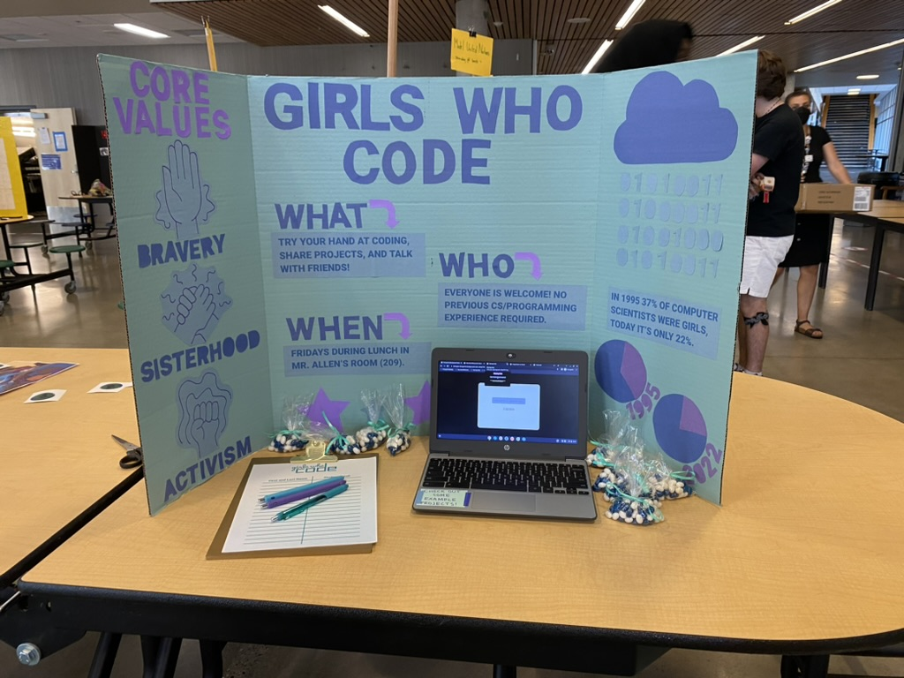
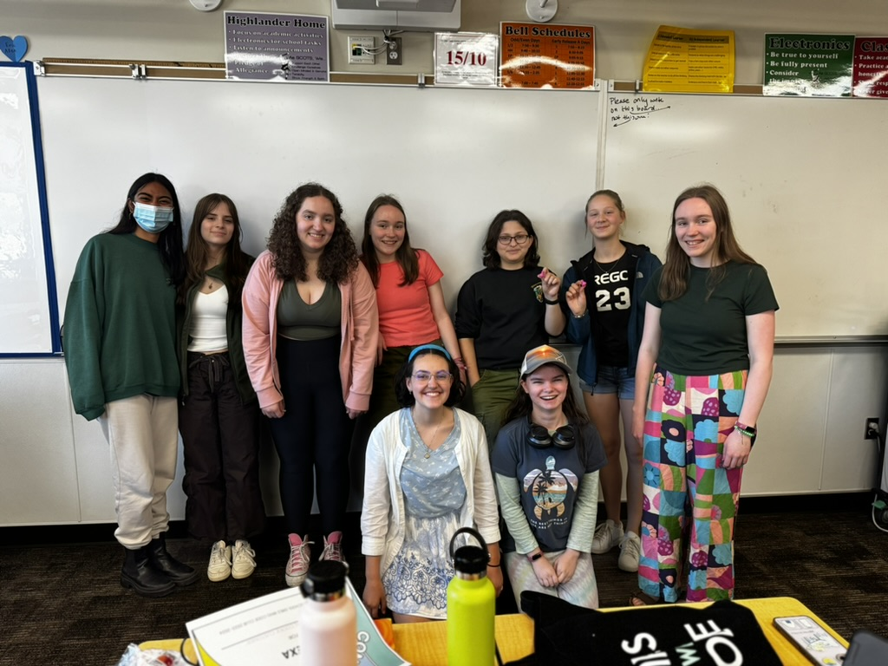
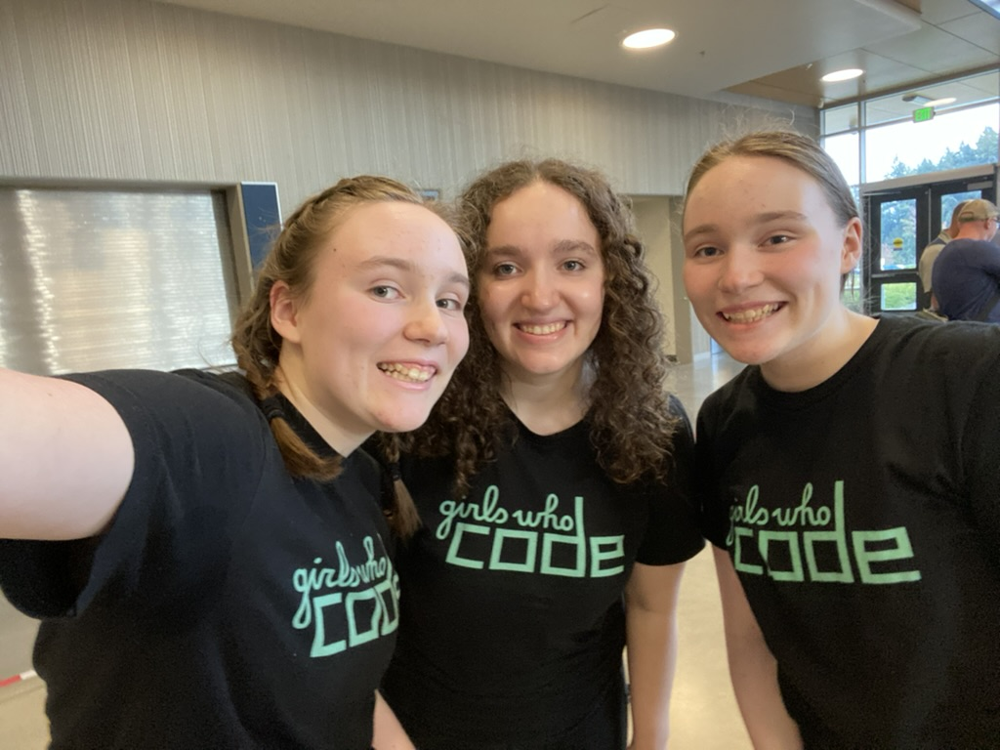
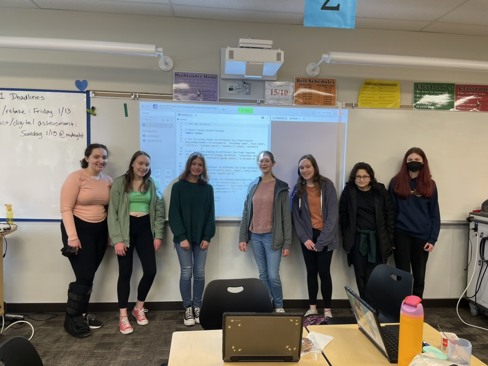

Hello, World!
Girls Who Code was a massive part of my high school life. In addition to participating in Girls Who Code summer programs for four years and completing all of the courses offered to me (many more than once), I was a member of my school's Girls Who Code club for as long as we had in-person school and was a club co-president for two years with my twin sister. Through Girls Who Code and other programs/classes, I've studied Web Development, Cybersecurity, Cryptography, Data Science, AI, Mobile App Development, and Game Design. I also enjoyed programing for my competition robotics team in high school and now my college’s University Rover Challenge team. Many people love coding for the sense of accomplishment that comes with beating bugs and finding solutions. For me, this extends to tackling real life problems. Over time, code has given me a voice to do good and advocate for things I care deeply about. (Check out some of my favorite projects below!)
Experience
- Girls Who Code Summer Immersion Program 2021
- Girls Who Code Self-Paced Program 2022
- Girls Who Code Self-Paced Program 2023
- Girls Who Code Self-Paced Program 2024
- Girls Who Code Club Co-President
- Girls Who Code Humanize AI Challenge Winner 2023
- Kode With Klossy Mobile App Development Camp 2023
- Kode With Klossy Data Visualization Alumni Program 2025
- UWB Hacks: Save the World! 2025
Classes
- Intro to Computer Science
- Game Design Programming
- AP Computer Science Principles
- CSS142: Computer Programming I
- CSS143: Computer Programming II
Coding Languages I've Explored
HTML, CSS, SCSS, Java, JavaScript (p5.js, TypeScript, Vue), Python (pandas, Matplotlib, scikit-learn), C#, C++, Swift, and SwiftUI.

Girls Who Code at the Club Fair

Girls Who Code Club 2024

Girls Who Code at the Club Fair

Girls Who Code Club 2023
Facing Bias
Facing Bias was my winning submission for Girls Who Code's Humanize AI Challenge in 2023. This website, made with my sister, explores our experience with Face ID as identical twins. We also used this project as an opportunity to interview our community to learn about their unique experiences with AI (for example, one of my friends has an altered fingerprint and can't use Touch ID while soap dispensers can't recognize another friend's hands because they have darker skin).
Coral Comeback
Coral Comeback was my final project for Kode With Klossy's Mobile App Development camp in 2023. Built in Xcode using Swift and SwiftUI, it is an educational app with resources, facts, and a quiz about coral reef decline. I collaborated with my sister and a classmate from Hawaii. We were inspired by how we all live near the ocean and the significance of the ocean in each of our daily lives. We had the opportunity to pitch our app to a developer from Apple and recieve feedback.
SC VEX 99621 Website
Designing and building a website for Shorecrest High School’s VEX Robotics Competition teams was incredibly fun as it allowed me to combine two of my biggest passions. This accessible website communicates team history and achievements. Additionally, having a website helps the Shoreline Robotics Society (the non-profit organization that supports the club) secure donations since it shows viewers the unique opportunities students get through the VEX Robotics program in the school district. Visit it at shorelineroboticssociety.org/sc-vex.
Bee a Hero
Bee a Hero: Save the Hive, Save the World! was my team's submission for my first hackathon (UWB Hacks: Save the World!) in 2025. Inpsired by declining bee populations, we created an informational website with an embedded game to raise awareness about bee conservation and encourage people to take action in an accessible and impactful way.
Adan for President
Adan for President was a campaign website I made for a friend running for a student government position. (I am happy to say he won!) My website helped him communicate his platform and goals in an engaging way and was made to match existing marketing materials. The website had a countdown timer until voting opened and closed. I also got to use the JavaScript Confetti library, which always makes me smile. Visit it at adanpres2025.netlify.app.